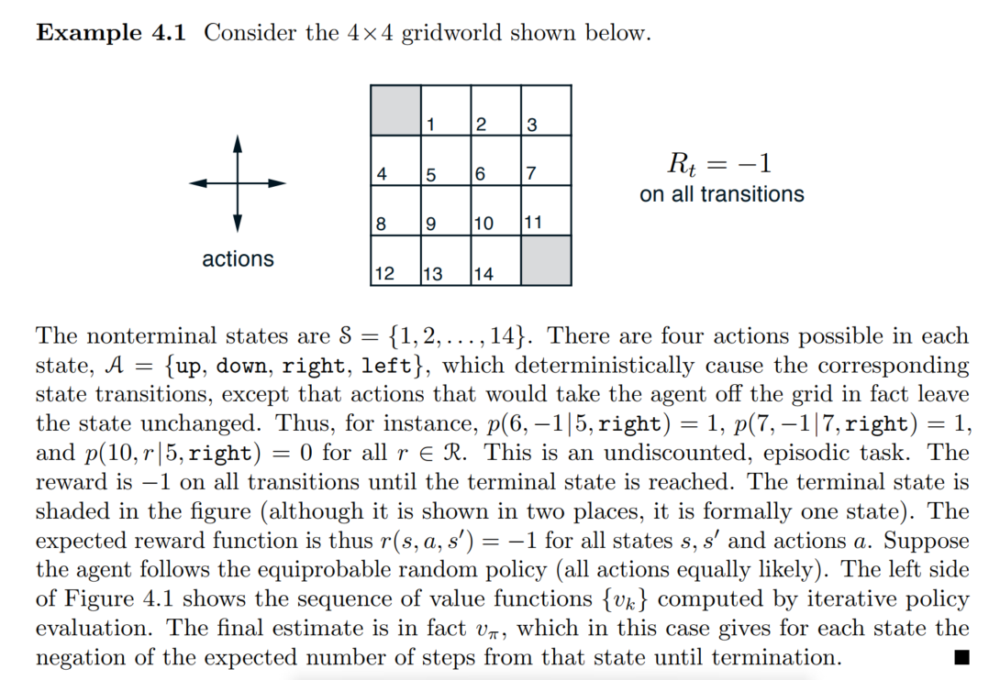

Autosaving every 60 secondsDinamic Programming
- definition : DP refers to a collection of algorithms that can be used to compute optimal policies given a perfect model of the environment as a Markov decision process(by suttion)
- MDP의 envirionment를 알고있을때 optimal policy를 구할 수 있는 알고리즘들
- How? : prediction과 improvement를 번갈아가면서 수행
- 한계
- environment의 model에 대해서 완벽히 알아야함
- computational expense가 너무 크다.
DP Prediction
- definition : prediction \(:=\) compute the state value function \(v_\pi\) for an arbitarary policy \(\pi\) = policy evaluation in the DP literature.
- How? : \(v_\pi\)에 대한 Bellman equation을 update rule로 바꿈 = iterative Policy evaluation algorithm
(Bellman equation for \(v_\pi\))
\[\begin{aligned} v_\pi(s) &:= E_\pi[G_t|S_t = s] \\ &= E_\pi[R_{t+1} + \gamma G_{t+1}|S_t = s]\\ &= E_\pi[R_{t+1} + \gamma v_\pi(S_{t+1})|S_t = s] \\ & = \sum_a\pi(a|s)\sum_{r,s'}p(r,s'|s,a)[r + \gamma v_\pi(s')] \end{aligned}\]- Bellman eq + updaterule \(\to\) policy evaluation algorithm
Q. 2에서 3으로 넘어가는거 모르겠음.
(Iterative policy evaluation)
\[\begin{aligned} &\text{For all s :}\\ &v_{k+1}(s) = \sum_a\pi(a|s)\sum_{s',r}p(s',r|s,a)[r+\gamma v_k(s')] \end{aligned}\]\(k \to \infty\) : \(v_k \to v_\pi\)
지금상태에서 (행동을 했을때) 모든 가능한 다음 state들의 value + 보상r의 기댓값으로 값을 현재의 value를 update함.
- DP를 expected update라 하는 이유.
이와반대인 sample update도 있음.
- 지금상태에서 가능한 모든 상태와 모든 보상들을 고려하지 않음.
- 하나의 샘플을 기반하여 value function을 구하는 방식임(나중에 나옴)
Iterative Policy Evaluation, for estimating $ V v_$

class DP_prediction():
def __init__(self,grid_size=(4,4)):
self.grid_size = grid_size
self.value_func = np.zeros(grid_size)
self.possible_states = np.array([[i,j] for i in range(grid_size[0]) for j in range(grid_size[1])])
self.possible_rewards = np.array([0,1])
self.action_mapper = {"n" : np.array([-1,0]),"s":np.array([1,0]) , "e":np.array([0,1]), "w":np.array([0,-1])}
def move(self,current_state,a):
bound = self.grid_size[0]
next_move = current_state + self.action_mapper[a]
for coord in next_move:
if coord >= bound or coord < 0:
return current_state
return next_move
def π(self,s,a):
return 0.25
def dynamics(self,s,a,s_next,r):
terminal_states = [[0,0],[self.grid_size[0]-1,self.grid_size[1]-1]]
deterministic_pos = self.move(s,a).tolist()
#print(deterministic_pos,s_next)
if deterministic_pos[0] != s_next[0] or deterministic_pos[1] != s_next[1] :
p = 0
elif deterministic_pos[0] == s_next[0] and deterministic_pos[1] == s_next[1]:
p = 1
return p
def updt_value(self,s,a,s_next,r):
gamma = 1
x = s_next[0]
y = s_next[1]
return self.dynamics(s,a,s_next,r)*(r + gamma * self.value_func[x][y])
def policy_eval(self,iter_nums = 50):
r = -1
gamma = 1
for k in range(iter_nums):
for i in range(self.grid_size[0]):
for j in range(self.grid_size[1]):
s = np.array([i,j])
if (i == 0 and j == 0) or (i==self.grid_size[0]-1 and j==self.grid_size[1]-1):
continue
v_update = 0
for a in self.action_mapper.keys():
update_value = 0
for next_s in self.possible_states:
r=-1
add = self.updt_value(s,a,next_s,r)
update_value += add
v_update += update_value
self.value_func[i][j] = self.π(s,a) * v_update
pred = DP_prediction()
pred.policy_eval(iter_nums =1000)
pred.value_funcarray([[ 0., -14., -20., -22.],
[-14., -18., -20., -20.],
[-20., -20., -18., -14.],
[-22., -20., -14., 0.]])class DP_prediction():
def __init__(self,grid_size=(4,4)):
self.grid_size = grid_size
self.value_func = np.zeros(grid_size)
self.possible_states = np.array([[i,j] for i in range(grid_size[0]) for j in range(grid_size[1])])
self.possible_rewards = np.array([0,1])
self.action_mapper = {"n" : np.array([-1,0]),"s":np.array([1,0]) , "e":np.array([0,1]), "w":np.array([0,-1])}
def move(self,current_state,a):
bound = self.grid_size[0]
next_move = current_state + self.action_mapper[a]
for coord in next_move:
if coord >= bound or coord < 0:
return current_state
return next_move
def π(self,s,a):
return 0.25
def dynamics(self,s,a,s_next,r):
terminal_states = [[0,0],[self.grid_size[0]-1,self.grid_size[1]-1]]
deterministic_pos = self.move(s,a).tolist()
#print(deterministic_pos,s_next)
if deterministic_pos[0] != s_next[0] or deterministic_pos[1] != s_next[1] :
p = 0
elif deterministic_pos[0] == s_next[0] and deterministic_pos[1] == s_next[1]:
p = 1
return p
def updt_value(self,s,a,s_next,r):
gamma = 1
x = s_next[0]
y = s_next[1]
return self.dynamics(s,a,s_next,r)*(r + gamma * self.value_func[x][y])
def policy_eval(self,iter_nums = 50):
r = -1
gamma = 1
for k in range(iter_nums):
for i in range(self.grid_size[0]):
for j in range(self.grid_size[1]):
s = np.array([i,j])
if (i == 0 and j == 0) or (i==self.grid_size[0]-1 and j==self.grid_size[1]-1):
continue
v_update = 0
for a in self.action_mapper.keys():
update_value = 0
for next_s in self.possible_states:
r=-1
add = self.updt_value(s,a,next_s,r)
update_value += add
v_update += update_value
self.value_func[i][j] = self.π(s,a) * v_update
if k%5 ==0:
print(k)
print(np.round(self.value_func))
pred = DP_prediction()
pred.policy_eval(iter_nums =100)
pred.value_func0
[[ 0. -1. -1. -1.]
[-1. -2. -2. -2.]
[-1. -2. -2. -2.]
[-1. -2. -2. 0.]]
5
[[ 0. -5. -7. -8.]
[-5. -7. -8. -8.]
[-7. -8. -8. -7.]
[-8. -8. -7. 0.]]
10
[[ 0. -8. -12. -13.]
[ -8. -11. -12. -13.]
[-12. -12. -12. -9.]
[-13. -13. -9. 0.]]
15
[[ 0. -10. -15. -16.]
[-10. -14. -15. -15.]
[-15. -15. -14. -11.]
[-16. -15. -11. 0.]]
20
[[ 0. -12. -17. -18.]
[-12. -15. -17. -17.]
[-17. -17. -15. -12.]
[-18. -17. -12. 0.]]
25
[[ 0. -12. -18. -20.]
[-12. -16. -18. -18.]
[-18. -18. -16. -13.]
[-20. -18. -13. 0.]]
30
[[ 0. -13. -19. -20.]
[-13. -17. -19. -19.]
[-19. -19. -17. -13.]
[-20. -19. -13. 0.]]
35
[[ 0. -13. -19. -21.]
[-13. -17. -19. -19.]
[-19. -19. -17. -13.]
[-21. -19. -13. 0.]]
40
[[ 0. -14. -19. -21.]
[-14. -17. -19. -19.]
[-19. -19. -18. -14.]
[-21. -19. -14. 0.]]
45
[[ 0. -14. -20. -22.]
[-14. -18. -20. -20.]
[-20. -20. -18. -14.]
[-22. -20. -14. 0.]]
50
[[ 0. -14. -20. -22.]
[-14. -18. -20. -20.]
[-20. -20. -18. -14.]
[-22. -20. -14. 0.]]
55
[[ 0. -14. -20. -22.]
[-14. -18. -20. -20.]
[-20. -20. -18. -14.]
[-22. -20. -14. 0.]]
60
[[ 0. -14. -20. -22.]
[-14. -18. -20. -20.]
[-20. -20. -18. -14.]
[-22. -20. -14. 0.]]
65
[[ 0. -14. -20. -22.]
[-14. -18. -20. -20.]
[-20. -20. -18. -14.]
[-22. -20. -14. 0.]]
70
[[ 0. -14. -20. -22.]
[-14. -18. -20. -20.]
[-20. -20. -18. -14.]
[-22. -20. -14. 0.]]
75
[[ 0. -14. -20. -22.]
[-14. -18. -20. -20.]
[-20. -20. -18. -14.]
[-22. -20. -14. 0.]]
80
[[ 0. -14. -20. -22.]
[-14. -18. -20. -20.]
[-20. -20. -18. -14.]
[-22. -20. -14. 0.]]
85
[[ 0. -14. -20. -22.]
[-14. -18. -20. -20.]
[-20. -20. -18. -14.]
[-22. -20. -14. 0.]]
90
[[ 0. -14. -20. -22.]
[-14. -18. -20. -20.]
[-20. -20. -18. -14.]
[-22. -20. -14. 0.]]
95
[[ 0. -14. -20. -22.]
[-14. -18. -20. -20.]
[-20. -20. -18. -14.]
[-22. -20. -14. 0.]]array([[ 0. , -13.99765839, -19.99663362, -21.99629468],
[-13.99765839, -17.99712654, -19.99688008, -19.99691576],
[-19.99663362, -19.99688008, -17.99736736, -13.99803444],
[-21.99629468, -19.99691576, -13.99803444, 0. ]])DP - Policy Improvement & Value Iteration
- DP는 Prediction + Improvement를 통해서 optimal policy를 구하는 control을 함.
- Prediction이 policy \(\pi\)에 대한 value function을 구하는 것이였다면
- Improvement는 구해진 value function을 기반으로 더 나은 policy를 향상(개선)시키는 과정임.
Policy Iteration
- value_func \(\to\) np.array
- value_func[0,1]
class DP():
def __init__(self,grid_size=(4,4)):
self.grid_size = np.array(grid_size)
self.S = [np.array([i,j]) for i in range(grid_size[0]) for j in range(grid_size[1])]
self.A = ["W","E","N","S"]
self.A_to_coord = {"W" : [0,-1],"E" : [0,1], "N" : [-1,0], "S" : [1,0]}
for k,v in self.A_to_coord.items():
self.A_to_coord[k] = np.array(v)
self.gamma = 1
self.R = -1
self.V = np.zeros(grid_size)
self.π = np.array([np.random.choice(self.A) for i in range(grid_size[0]) for j in range(grid_size[1])]).reshape(grid_size)
"""
Input
s : two-dimensional np.array
Output
a : action
ex)
Input : [0,1]
output : "W"
"""
def move(self,s,a):
"""
Input
s : current_state(position)
a : action(from deterministic policy π)
output
s_next : state after one_step transition
ex)
Input : s = [0,1],a = "W"
Output : s_next = [0,0]
"""
s_next = s + self.A_to_coord[a]
if s_next[0] < 0 or s_next[1] <0 or s_next[0] >= self.grid_size[0] or s_next[1] >= self.grid_size[1]:
return s # |S|를 넘어갈 경우, 원래 상태를 반환
else:
return s_next
def move_test(self):
S = [np.array([i,j]) for i in [0,1,2,3] for j in [0,1,2,3]]
for s in S:
for a in self.A:
print(s,a,self.move(s,a))
def dynamics(self,s_prime,r,s,a):
r=-1
"""
Input
s : current_state(position)
a : action(from deterministic policy π)
s_prime : all of the possible states after one-step transition
r : immediate reward(-1)
output
0 if s에서 a로 움직였을때의 변화된 상태 next_s와 s_prime의 input이 다를때
1 if s에서 a로 움직였을때의 변화된 상태 next_s와 s_prime의 input이 같을때
즉, a방향으로 움직이면 반드시 a방향으로 감(deterministic)
"""
s_next = self.move(s,a)
if np.sum(s_next != s_prime)>=1:
return 0
else:
return 1
def dynamics_test(self,check_p = 1):
r=-1
for s in self.S:
for a in self.A:
for s_prime in self.S: #가능한 모든 next_state
if self.dynamics(s_prime,r,s,a) == check_p:
print(f"state : {s} action : {a} s_prime : {s_prime} dynamics : {self.dynamics(s_prime,r,s,a)}")
def Policy_Evaluation(self):
"""
estimating optimal policy
Input : X
Output : V ~= V_* \pi ~= pi_*
"""
Δ = 0 ; θ = 5
terminal_states = [[0,0],[self.grid_size[0]-1,self.grid_size[1]-1]]
while True:
for s in self.S:
v = self.V[s[0]][s[1]] #여기 틀렸던 부분
a = self.π[s[0]][s[1]]
total = 0
if list(s) in terminal_states:
continue
for s_prime in self.S:
r = -1
v_dynamics = self.dynamics(s_prime,r,s,a)
total += v_dynamics * (r + self.gamma * self.V[s_prime[0]][s_prime[1]])
self.V[s[0]][s[1]] = total
Δ = max(Δ,abs(v-self.V[s[0]][s[1]]))
if Δ < θ:
break
def Policy_Improvement(self):
terminal_states = [[0,0],[self.grid_size[0]-1,self.grid_size[1]-1]]
policy_stable = True
for s in self.S:
old_action = self.π[s[0]][s[1]]
if list(s) in terminal_states:
continue
new_a = "S"
new_a_val = -5000
for a in self.A:
"""
1. 먼저 move해서 s_next 얻고
2. s_next얻으면 그값의 value를 얻고
3. 이전 a에 의한 value보다 크면 바꾸고 아니면 그대로
"""
s_next = self.move(s,a)
if self.V[s_next[0]][s_next[1]] > new_a_val:
new_a = a
new_a_val = self.V[s_next[0]][s_next[1]]
else:
pass
self.π[s[0]][s[1]] = new_a
if old_action != self.π[s[0]][s[1]]:
policy_stable = False
return policy_stable
def Policy_Iteration(self):
policy_stable = False
count = 0
while policy_stable != True:
self.Policy_Evaluation()
policy_stable = self.Policy_Improvement()
count +=1
print("==========================")
print(f'iteration : {count}')
print(self.V)
self.π[0][0] = "X"
self.π[self.grid_size[0]-1][self.grid_size[1]-1] = "X"
print(self.π)
def Value_Iteration(self):
θ = 0.5; r = -1
terminal_states = [[0,0],[self.grid_size[0]-1,self.grid_size[1]-1]]
count = 0
while True:
count+=1
print(f"iteration : {count}")
Δ = 0
for s in self.S:
v = self.V[s[0]][s[1]]
#print("v",v)
"""
1. 가능한 모든 succesor state에서 dynamics * (r + gamma * V(s'))을 계산한 뒤
2.
"""
update_val = -50000
if list(s) in terminal_states:
continue
for a in self.A:
total = 0
for s_prime in self.S:
total += self.dynamics(s_prime,r,s,a) * (r + self.gamma * self.V[s_prime[0]][s_prime[1]])
if update_val < total:
update_val = total
self.V[s[0]][s[1]] = update_val
Δ = max(Δ,abs(v-self.V[s[0]][s[1]]))
print(self.V)
if Δ < θ:
self.Policy_Improvement()
self.π[0][0] = "X"
self.π[self.grid_size[0]-1][self.grid_size[1]-1] = "X"
print("========================")
print("optimal policy π")
print(self.π)
break==========================
iteration : 1
[[ 0. -1. -2. -1.]
[-1. -2. -1. -2.]
[-1. -2. -3. -4.]
[-1. -2. -1. 0.]]
[['X' 'W' 'W' 'E']
['N' 'W' 'W' 'W']
['W' 'W' 'N' 'S']
['W' 'W' 'E' 'X']]
==========================
iteration : 2
[[ 0. -1. -2. -2.]
[-1. -2. -3. -4.]
[-2. -3. -4. -1.]
[-2. -3. -1. 0.]]
[['X' 'W' 'W' 'W']
['N' 'W' 'W' 'S']
['N' 'W' 'E' 'S']
['W' 'E' 'E' 'X']]
==========================
iteration : 3
[[ 0. -1. -2. -3.]
[-1. -2. -3. -2.]
[-2. -3. -2. -1.]
[-3. -2. -1. 0.]]
[['X' 'W' 'W' 'W']
['N' 'W' 'W' 'S']
['N' 'W' 'E' 'S']
['E' 'E' 'E' 'X']]
==========================
iteration : 4
[[ 0. -1. -2. -3.]
[-1. -2. -3. -2.]
[-2. -3. -2. -1.]
[-3. -2. -1. 0.]]
[['X' 'W' 'W' 'W']
['N' 'W' 'W' 'S']
['N' 'W' 'E' 'S']
['E' 'E' 'E' 'X']]array([['X', 'W', 'W', 'W'],
['N', 'W', 'W', 'S'],
['N', 'W', 'E', 'S'],
['E', 'E', 'E', 'X']], dtype='<U1')iteration : 1
[[ 0. -1. -1. -1.]
[-1. -1. -1. -1.]
[-1. -1. -1. -1.]
[-1. -1. -1. 0.]]
iteration : 2
[[ 0. -1. -2. -2.]
[-1. -2. -2. -2.]
[-2. -2. -2. -1.]
[-2. -2. -1. 0.]]
iteration : 3
[[ 0. -1. -2. -3.]
[-1. -2. -3. -2.]
[-2. -3. -2. -1.]
[-3. -2. -1. 0.]]
iteration : 4
[[ 0. -1. -2. -3.]
[-1. -2. -3. -2.]
[-2. -3. -2. -1.]
[-3. -2. -1. 0.]]
========================
optimal policy π
[['X' 'W' 'W' 'W']
['N' 'W' 'W' 'S']
['N' 'W' 'E' 'S']
['E' 'E' 'E' 'X']]MC Prediction
class Environment():
def __init__(self,grid_size):
self.grid_size = np.array(grid_size)
self.S = [np.array([i,j]) for i in range(grid_size[0]) for j in range(grid_size[1])]
self.A = ["W","E","N","S"]
self.A_to_coord = {"W" : [0,-1],"E" : [0,1], "N" : [-1,0], "S" : [1,0]}
for k,v in self.A_to_coord.items():
self.A_to_coord[k] = np.array(v)
self.gamma = 1
self.R = -1
self.V = np.zeros(grid_size)
def move(self,s,a):
"""
Input
s : current_state(position)
a : action(from deterministic policy π)
output
s_next : state after one_step transition
ex)
Input : s = [0,1],a = "W"
Output : s_next = [0,0]
"""
s_next = s + self.A_to_coord[a]
if s_next[0] < 0 or s_next[1] <0 or s_next[0] >= self.grid_size[0] or s_next[1] >= self.grid_size[1]:
return s # |S|를 넘어갈 경우, 원래 상태를 반환
else:
return s_next
def move_test(self):
S = [np.array([i,j]) for i in [0,1,2,3] for j in [0,1,2,3]]
for s in S:
for a in self.A:
print(s,a,self.move(s,a))
def dynamics(self,s_prime,r,s,a):
r=-1
"""
Input
s : current_state(position)
a : action(from deterministic policy π)
s_prime : all of the possible states after one-step transition
r : immediate reward(-1)
output
0 if s에서 a로 움직였을때의 변화된 상태 next_s와 s_prime의 input이 다를때
1 if s에서 a로 움직였을때의 변화된 상태 next_s와 s_prime의 input이 같을때
즉, a방향으로 움직이면 반드시 a방향으로 감(deterministic)
"""
s_next = self.move(s,a)
if np.sum(s_next != s_prime)>=1:
return 0
else:
return 1
def dynamics_test(self,check_p = 1):
r=-1
for s in self.S:
for a in self.A:
for s_prime in self.S: #가능한 모든 next_state
if self.dynamics(s_prime,r,s,a) == check_p:
print(f"state : {s} action : {a} s_prime : {s_prime} dynamics : {self.dynamics(s_prime,r,s,a)}")
class MC_Prediction(Environment):
def __init__(self,grid_size=(4,4)):
super().__init__(grid_size)
def sampling_action(self,s_t,π):
"""
Input current state s_t : tuple
ouput action : str (a ~ π(a|s))
"""
actions = [];prob = []
for a,p in π[s_t].items():
actions.append(a)
prob.append(p)
return np.random.choice(a=actions,p=prob)
def generate_episode(self,s_0,π):
"""
Input
initial state s0 : tuple
output
sequence following policy π
"""
terminal_states = [(0,0),(grid_size[0]-1,grid_size[0]-1)]
sequence = [s_0];epi_num = 0;r=-1
while True:
a = self.sampling_action(sequence[-1],π)
sequence.append(a)
s_t = tuple(self.move(sequence[-2],a))
sequence.append(self.R)
sequence.append(s_t)
if s_t in terminal_states:
break
return sequence
def prediction(self,s_0,π,iter_nums = 10000):
"""
Input
arbitrary policy π(a|s) : dict
output
value function : np.array
"""
Returns = {tuple(s) : [] for s in self.S}
count = 0
while True:
sequence = self.generate_episode(s_0,π)
G = 0
for i in range(len(sequence)-4,-1,-3):
s = sequence[i];a=sequence[i+1];r=sequence[i+2]
G = self.gamma * G + r
previous_state = [sequence[j] for j in range(i-3,-1,-3)] #first visit MC
if s not in previous_state:
Returns[s].append(G)
self.V[s[0]][s[1]] = np.mean(np.array(Returns[s])) #unbiased estimator of v_π(s)
count+=1
if count == iter_nums:
break
grid_size = (4,4)
π = {}
for i in range(grid_size[0]):
for j in range(grid_size[1]):
state = (i,j)
action_prob = {}
for a in ["W","E","S","N"]:
action_prob[a] = 0.25
π[state] = action_prob
mc = MC_Prediction()
s_0 = (2,2)
mc.prediction(s_0,π,5000)
mc.Varray([[ 0. , -14.48957713, -20.86497403, -22.76839039],
[-14.09795918, -18.85109114, -20.67102397, -20.5477997 ],
[-20.28465063, -20.50443459, -18.2046 , -14.27503628],
[-22.47093023, -20.49948823, -14.08302446, 0. ]])(why MC?)
- DP methods require dynamics \(p(s',r|,s,a)\) but it is not easy to determine.
- All of the \(p(s',r|s,a)\) must be computed before DP can be applied.
- However, such computations are often complex and error-prone.
- MC is easy.
- Just sampling \(G_t\) from episodes.
- It can be a significant advantage even when one has complete knowledge of the environment’s dynamics.
- \(p\)를 알아도 \(|\mathbb{s}|\)가 너무 크면 DP는 힘들다. 그러므로 \(p\)를 알 경우에도 sampling만으로 \(v_\pi\)를 추정하는 MC가 쓰일 수 있다.
(MC vs DP)
어느 시점? 어떤 값? 몇 개의 값? - DP는 one-step transition 후 가능한 모든 value로 update. - MC는 episode가 끝난 후 sampling된 하나의 Return으로 update.
bootsrap? - DP는 estimates로 estimates를 update로 하는 bootstrap method. - MC는 sample로 update하는 method.(bootstrap method가 아님)
MC Control
- environment의 model이 없는 상황에서 \(\pi_*,v_*\)를 찾는 방법
- How?
- 윗식과 같이 Greedy하게 policy를 improvement하면 됨.(policy improvement theorem에서 유도됨)
- DP에서는 \(p(s',r|s,a)\)를 알기에 (3)을 사용했었음.하지만 MC에서는 \(p(s',r|s,a)\)을 모르는 상황을 가정함.
- 그러므로 (1)식을 사용.
- action value function을 estimate하고
- max q를 돌려주는 action으로 \(\pi(s)\)를 update.(Greedy하게 update)
- 하지만 Greedy 하게 action만 하면 문제가 있음. \(\to\) 가보지 못한 (s,a)를 안가는 action을 계속 취함
- \(Q \approx q_\pi\)이려면 \(\forall s,\forall a\)에 대해 많이 여러번 방문해줘야함.
- Greedy하게 움직일 경우 \(\forall s,\forall a\)를 여러번 방문하지 못함.(Greedy한 action만 취하기 때문임)
- 그래서 exploring start를 가정을 사용함. 이렇게 하여 모든 \((s,a)\)를 방문함을 여러번 방문함을 보장할 수 있음.
- episode가 시작하는 \((s,a)\)를 모든 확률 > 0 이게 랜덤하게 시작.
- 하지만 exploring start도 문제가 있음. 특히, learning directly from actual interaction with an environment일때 문제라고 함.
- There are two approaches to ensuring this.
- on-policy method
- 지속적으로 exploring하여 모든 (s,a)를 여러번 방문하게 하는 방법.(궁극적으로는, \(\to Q \approx q_\pi\))
- How? \(\to\) using \(\epsilon\)-soft policy
- \(\pi(a|s) >0\)인 policy를 사용함.
- 즉,모든 \((s,a)\)를 여러번 방문할 수 있도록 하는 policy를 사용.
- 대표적으로 \(\epsilon\) - greedy policy가 있음.
- 아주 작은 확률 \(\epsilon\)으로 greedy하게 action하지 않고 균등한 확률로 action.
- 지속적으로 exploring하여 모든 (s,a)를 여러번 방문하게 하는 방법.(궁극적으로는, \(\to Q \approx q_\pi\))
- off-policy method
- …
- on-policy method
class Environment2():
def __init__(self,grid_size):
self.grid_size = np.array(grid_size)
self.S = [np.array([i,j]) for i in range(grid_size[0]) for j in range(grid_size[1])]
self.A = ["W","E","N","S"]
self.A_to_coord = {"W" : [0,-1],"E" : [0,1], "N" : [-1,0], "S" : [1,0]}
for k,v in self.A_to_coord.items():
self.A_to_coord[k] = np.array(v)
self.gamma = 1
self.R = -1
def move(self,s,a):
"""
Input
s : current_state(position)
a : action(from deterministic policy π)
output
s_next : state after one_step transition
ex)
Input : s = [0,1],a = "W"
Output : s_next = [0,0]
"""
s_next = s + self.A_to_coord[a]
if s_next[0] < 0 or s_next[1] <0 or s_next[0] >= self.grid_size[0] or s_next[1] >= self.grid_size[1]:
return s # |S|를 넘어갈 경우, 원래 상태를 반환
else:
return s_next
def move_test(self):
S = [np.array([i,j]) for i in [0,1,2,3] for j in [0,1,2,3]]
for s in S:
for a in self.A:
print(s,a,self.move(s,a))
def dynamics(self,s_prime,r,s,a):
r=-1
"""
Input
s : current_state(position)
a : action(from deterministic policy π)
s_prime : all of the possible states after one-step transition
r : immediate reward(-1)
output
0 if s에서 a로 움직였을때의 변화된 상태 next_s와 s_prime의 input이 다를때
1 if s에서 a로 움직였을때의 변화된 상태 next_s와 s_prime의 input이 같을때
즉, a방향으로 움직이면 반드시 a방향으로 감(deterministic)
"""
s_next = self.move(s,a)
if np.sum(s_next != s_prime)>=1:
return 0
else:
return 1
def dynamics_test(self,check_p = 1):
r=-1
for s in self.S:
for a in self.A:
for s_prime in self.S: #가능한 모든 next_state
if self.dynamics(s_prime,r,s,a) == check_p:
print(f"state : {s} action : {a} s_prime : {s_prime} dynamics : {self.dynamics(s_prime,r,s,a)}")class MC_Control(Environment2):
def __init__(self,grid_size=(4,4),uniform_dist=False):
super().__init__(grid_size)
def sampling_action(self,s_t,π):
"""
Input current state s_t : tuple
ouput action : str (a ~ π(a|s))
"""
actions = []
prob = []
for a,p in π[s_t].items():
actions.append(a)
prob.append(p)
#print(prob)
return np.random.choice(a=actions,p=prob)
def generate_episode(self,s_0,π):
"""
Input
initial state s0 : tuple
output
sequence following policy π
"""
terminal_states = [(0,0),(self.grid_size[0]-1,self.grid_size[0]-1)]
sequence = [s_0];epi_num = 0;r=-1
while True:
a = self.sampling_action(sequence[-1],π)
sequence.append(a)
s_t = tuple(self.move(sequence[-2],a))
sequence.append(self.R)
sequence.append(s_t)
if s_t in terminal_states:
break
return sequence
def generate_π(self,uniform=False):
"""
Input : NA
Output : {(x,y) : {"W" : pr1,"E" : pr2 ,...}}
ex)
{(0,0):{"W" : 0.1, "E" : 0.2, ...},(0,1):{"W":0.4,"E":0.5...}}
"""
π = {(i,j): {} for i in range(self.grid_size[0]) for j in range(self.grid_size[1])}
for t in π.values():
unnormalized_prob = np.random.rand(4)
if uniform == False:
prob = unnormalized_prob/np.sum(unnormalized_prob)
else:
prob = [0.25] * 4
for i in range(len(self.A)):
t[self.A[i]] = prob[i]
return π
def generate_Q(self,random=False):
"""
Input : NA
Output : {s_0,a_0 : val1, s_1,a_2 : val2, ...}
where s_0 : (x,y) , val1 : k
ex)
{((0,0),"W") : 1.5 , ((0,0),"E") : 2.5, ...,((0,1)),"W")}
"""
if random == True:
return {(tuple(s),a) : np.random.randn() for s in self.S for a in self.A}
else :
return {(tuple(s),a) : 0 for s in self.S for a in self.A}
def generate_Returns(self):
"""
Input : NA
Output : {(s,a) : [] ...}
ex)
{((0,0),"W") : [], ((0,0),"E" : []), .... ,((3,2) : "N" : []) , ...}
"""
return {(tuple(s),a) : [] for s in self.S for a in self.A}
def argmax_a_Q(self,Q,s):
max_action = "W"
max_value = -5000
for visit,Q_val in Q.items():
if visit[0] == s:
if Q_val > max_value:
max_action = visit[1]
max_value = Q_val
return max_action
def argmax_test(self,s):
Q = self.generate_Q()
for visit,Q_val in Q.items():
Q[visit] = np.random.choice([0,1,2,3])
#print(visit,Q_val)
print(Q)
print(f"state : {s} max_action {self.argmax_a_Q(Q,s)}")
def control(self,s_0,iter_nums = 100000,epsilon = 0.99995,decaying = True):
π = self.generate_π(True)
Q = self.generate_Q()
Returns = self.generate_Returns()
terminal_states = [(0,0),(self.grid_size[0]-1,self.grid_size[0]-1)]
t = time.time()
count = 0
count = 0
while True:
count+=1
if decaying == True:
ϵ = epsilon ** count
if count % 10000 == 0:
print(f"epsilon{count}: {ϵ}")
sequence = self.generate_episode(s_0,π)
G = 0
for i in range(len(sequence)-4,-1,-3):
G = self.gamma * G + sequence[i+2]
previous_visit = [(sequence[j],sequence[j+1]) for j in range(i-3,-1,-3)]
current = (sequence[i],sequence[i+1])
if current not in previous_visit:
Returns[current].append(G)
Q[current] = np.mean(np.array(Returns[current]))
s=current[0]
max_action = self.argmax_a_Q(Q,s)
for a in self.A:
if a == max_action:
π[s][a] = 1 - ϵ + ϵ/len(self.A)
else:
π[s][a] = ϵ/len(self.A)
if count >= iter_nums:
print("time :",t - time.time())
return Q,Returns,π
def incremental_control(self,s_0,iter_nums = 100000,epsilon = 0.99995,decaying = True):
π = self.generate_π(True)
Q = self.generate_Q()
Returns = self.generate_Returns()
N = {(tuple(s),a) : 0 for s in self.S for a in self.A}
terminal_states = [(0,0),(self.grid_size[0]-1,self.grid_size[0]-1)]
t = time.time()
count = 0
while True:
count+=1
if decaying == True:
ϵ = epsilon ** count
if count % 10000 == 0:
print(f"epsilon{count}: {ϵ}")
sequence = self.generate_episode(s_0,π)
G = 0
for i in range(len(sequence)-4,-1,-3):
G = self.gamma * G + sequence[i+2]
previous_visit = [(sequence[j],sequence[j+1]) for j in range(i-3,-1,-3)]
current = (sequence[i],sequence[i+1])
if current not in previous_visit:
Returns[current].append(G)
N[sequence[i],sequence[i+1]] += 1
Q[current] = Q[current] + (1/N[sequence[i],sequence[i+1]])*(G-Q[current])
s=current[0]
max_action = self.argmax_a_Q(Q,s)
for a in self.A:
if a == max_action:
π[s][a] = 1 - ϵ + ϵ/len(self.A)
else:
π[s][a] = ϵ/len(self.A)
if count >= iter_nums:
print("time :",t - time.time())
return Q,Returns,πepsilon10000: 0.606523077874078
epsilon20000: 0.3678702439938449
epsilon30000: 0.22312179264543486
epsilon40000: 0.13532851641609098
epsilon50000: 0.08207986830082019
epsilon60000: 0.049783334353312426
epsilon70000: 0.030194741178805377
epsilon80000: 0.018313807355380202
epsilon90000: 0.01110774680477813
epsilon100000: 0.006737104780279986
time : -10.034584522247314{((0, 0), 'W'): 0,
((0, 0), 'E'): 0,
((0, 0), 'N'): 0,
((0, 0), 'S'): 0,
((0, 1), 'W'): -1.0,
((0, 1), 'E'): -10.013944223107552,
((0, 1), 'N'): -6.268623024830696,
((0, 1), 'S'): -9.052246603970728,
((0, 2), 'W'): -6.747187685020726,
((0, 2), 'E'): -14.498630136986284,
((0, 2), 'N'): -12.776056338028146,
((0, 2), 'S'): -13.368355995055618,
((0, 3), 'W'): -13.03755215577189,
((0, 3), 'E'): -15.35992217898833,
((0, 3), 'N'): -14.858585858585865,
((0, 3), 'S'): -10.554105909439766,
((1, 0), 'W'): -9.136170212765952,
((1, 0), 'E'): -11.186411149825785,
((1, 0), 'N'): -1.0,
((1, 0), 'S'): -12.917414721723514,
((1, 1), 'W'): -7.171156893819335,
((1, 1), 'E'): -11.358722358722364,
((1, 1), 'N'): -4.370344177274873,
((1, 1), 'S'): -11.373970345963762,
((1, 2), 'W'): -10.171052631578956,
((1, 2), 'E'): -11.063912201420285,
((1, 2), 'N'): -10.94296824368114,
((1, 2), 'S'): -6.765374467221436,
((1, 3), 'W'): -11.483893557422972,
((1, 3), 'E'): -10.893564356435634,
((1, 3), 'N'): -12.532346063912712,
((1, 3), 'S'): -4.618298488925688,
((2, 0), 'W'): -13.34355828220859,
((2, 0), 'E'): -13.707762557077613,
((2, 0), 'N'): -7.363119415109663,
((2, 0), 'S'): -14.433333333333337,
((2, 1), 'W'): -10.756267409470762,
((2, 1), 'E'): -10.363328822733449,
((2, 1), 'N'): -6.547498949138301,
((2, 1), 'S'): -11.027777777777764,
((2, 2), 'W'): -8.199448106699363,
((2, 2), 'E'): -2.5312929964093014,
((2, 2), 'N'): -8.5300193673338,
((2, 2), 'S'): -5.2740273719821555,
((2, 3), 'W'): -6.433562197092097,
((2, 3), 'E'): -4.328860536735588,
((2, 3), 'N'): -6.99127473930623,
((2, 3), 'S'): -1.0,
((3, 0), 'W'): -15.357476635514043,
((3, 0), 'E'): -11.664444444444454,
((3, 0), 'N'): -13.981378026070765,
((3, 0), 'S'): -15.982800982800986,
((3, 1), 'W'): -13.768028846153838,
((3, 1), 'E'): -6.739085772984088,
((3, 1), 'N'): -12.896698615548473,
((3, 1), 'S'): -12.837549933422094,
((3, 2), 'W'): -10.868327402135233,
((3, 2), 'E'): -1.0,
((3, 2), 'N'): -9.850946854001224,
((3, 2), 'S'): -6.852646638054353,
((3, 3), 'W'): 0,
((3, 3), 'E'): 0,
((3, 3), 'N'): 0,
((3, 3), 'S'): 0}- 벨만최적방정식과 뭔가 이상하게 다름.
- 따라서 바꿈
R2_renew = {}
for visit,value in R2.items():
R2_renew[visit]=np.mean(np.array(value[-100:]))
R2_renew{((0, 0), 'W'): nan,
((0, 0), 'E'): nan,
((0, 0), 'N'): nan,
((0, 0), 'S'): nan,
((0, 1), 'W'): -1.0,
((0, 1), 'E'): -3.81,
((0, 1), 'N'): -2.49,
((0, 1), 'S'): -3.61,
((0, 2), 'W'): -2.4,
((0, 2), 'E'): -6.56,
((0, 2), 'N'): -6.41,
((0, 2), 'S'): -6.48,
((0, 3), 'W'): -5.19,
((0, 3), 'E'): -8.15,
((0, 3), 'N'): -6.6,
((0, 3), 'S'): -3.83,
((1, 0), 'W'): -4.14,
((1, 0), 'E'): -5.23,
((1, 0), 'N'): -1.0,
((1, 0), 'S'): -5.81,
((1, 1), 'W'): -2.45,
((1, 1), 'E'): -4.68,
((1, 1), 'N'): -2.01,
((1, 1), 'S'): -4.78,
((1, 2), 'W'): -3.59,
((1, 2), 'E'): -3.77,
((1, 2), 'N'): -3.9,
((1, 2), 'S'): -3.02,
((1, 3), 'W'): -4.6,
((1, 3), 'E'): -3.71,
((1, 3), 'N'): -5.0,
((1, 3), 'S'): -2.02,
((2, 0), 'W'): -6.41,
((2, 0), 'E'): -6.41,
((2, 0), 'N'): -2.38,
((2, 0), 'S'): -6.98,
((2, 1), 'W'): -3.68,
((2, 1), 'E'): -3.76,
((2, 1), 'N'): -3.01,
((2, 1), 'S'): -3.55,
((2, 2), 'W'): -4.0,
((2, 2), 'E'): -2.0,
((2, 2), 'N'): -4.02,
((2, 2), 'S'): -2.02,
((2, 3), 'W'): -3.01,
((2, 3), 'E'): -2.02,
((2, 3), 'N'): -3.06,
((2, 3), 'S'): -1.0,
((3, 0), 'W'): -9.21,
((3, 0), 'E'): -4.9,
((3, 0), 'N'): -7.65,
((3, 0), 'S'): -9.63,
((3, 1), 'W'): -6.64,
((3, 1), 'E'): -2.19,
((3, 1), 'N'): -6.02,
((3, 1), 'S'): -5.51,
((3, 2), 'W'): -3.96,
((3, 2), 'E'): -1.0,
((3, 2), 'N'): -3.5,
((3, 2), 'S'): -2.32,
((3, 3), 'W'): nan,
((3, 3), 'E'): nan,
((3, 3), 'N'): nan,
((3, 3), 'S'): nan}epsilon이 중요함.
- 처음엔 탐험하다가 마지막에 가서 0정도로 떨어져야함
- 중간에 떨어져 버리면 … 탐험을 하지못하고
- 떨어지지 않으면 optimal과 전혀 가깝지 못한 stochastic policy
Q-learning 하면서 구현한 코드
class Environment():
def __init__(self,grid_size):
self.grid_size = np.array(grid_size)
self.S = [np.array([i,j]) for i in range(grid_size[0]) for j in range(grid_size[1])]
self.Terminal_states = [(0,0),(self.grid_size[0]-1,self.grid_size[1]-1)]
self.A = ["W","E","N","S"]
self.A_to_coord = {"W" : [0,-1],"E" : [0,1], "N" : [-1,0], "S" : [1,0]}
for k,v in self.A_to_coord.items():
self.A_to_coord[k] = np.array(v)
self.gamma = 1
self.R = -1
def move(self,s,a):
"""
Input
s : current_state(position)
a : action(from deterministic policy π)
output
s_next : state after one_step transition
ex)
Input : s = [0,1],a = "W"
Output : s_next = [0,0]
"""
s_next = s + self.A_to_coord[a]
if s_next[0] < 0 or s_next[1] <0 or s_next[0] >= self.grid_size[0] or s_next[1] >= self.grid_size[1]:
return s # |S|를 넘어갈 경우, 원래 상태를 반환
else:
return s_next
def move_test(self):
S = [np.array([i,j]) for i in [0,1,2,3] for j in [0,1,2,3]]
for s in S:
for a in self.A:
print(s,a,self.move(s,a))
def dynamics(self,s_prime,r,s,a):
r=-1
"""
Input
s : current_state(position)
a : action(from deterministic policy π)
s_prime : all of the possible states after one-step transition
r : immediate reward(-1)
output
0 if s에서 a로 움직였을때의 변화된 상태 next_s와 s_prime의 input이 다를때
1 if s에서 a로 움직였을때의 변화된 상태 next_s와 s_prime의 input이 같을때
즉, a방향으로 움직이면 반드시 a방향으로 감(deterministic)
"""
s_next = self.move(s,a)
if np.sum(s_next != s_prime)>=1:
return 0
else:
return 1
def dynamics_test(self,check_p = 1):
r=-1
for s in self.S:
for a in self.A:
for s_prime in self.S: #가능한 모든 next_state
if self.dynamics(s_prime,r,s,a) == check_p:
print(f"state : {s} action : {a} s_prime : {s_prime} dynamics : {self.dynamics(s_prime,r,s,a)}")
def sampling_action(self,s_t,π):
"""
Input current state s_t : tuple
ouput action : str (a ~ π(a|s))
"""
actions = []
prob = []
for a,p in π[s_t].items():
actions.append(a)
prob.append(p)
#print(prob)
return np.random.choice(a=actions,p=prob)
def generate_π(self,uniform=False):
"""
Input : NA
Output : {(x,y) : {"W" : pr1,"E" : pr2 ,...}}
ex)
{(0,0):{"W" : 0.1, "E" : 0.2, ...},(0,1):{"W":0.4,"E":0.5...}}
"""
π = {(i,j): {} for i in range(self.grid_size[0]) for j in range(self.grid_size[1])}
for t in π.values():
unnormalized_prob = np.random.rand(4)
if uniform == False:
prob = unnormalized_prob/np.sum(unnormalized_prob)
else:
prob = [0.25] * 4
for i in range(len(self.A)):
t[self.A[i]] = prob[i]
return π
def argmax_a_Q(self,Q,s):
max_action = "W"
max_value = -5000
for visit,Q_val in Q.items():
if visit[0] == s:
if Q_val > max_value:
max_action = visit[1]
max_value = Q_val
return max_action
class Q_learning(Environment):
def __init__(self,grid_size=(4,4)):
super().__init__(grid_size)
def control(self,s_0,iter_num,alpha,epsilon):
Q = {(tuple(s),a) : 0 for s in self.S for a in self.A}
π = self.generate_π()
γ = 1
for ep_num in range(iter_num):
ϵ = epsilon ** (ep_num + 1)
α = alpha ** (ep_num + 1)
if ep_num % 1000 == True:
print(f"epsilon : {ϵ} alpha : {α}")
s_t = s_0
while s_t not in self.Terminal_states:
a_t = self.sampling_action(s_t,π)
r,s_prime = -1,tuple(self.move(s_t,a_t))
Q[(s_t,a_t)] = Q[(s_t,a_t)] + α * (r + γ * Q[(s_prime,self.argmax_a_Q(Q,s_prime))] - Q[(s_t,a_t)])
a_star = self.argmax_a_Q(Q,tuple(s_t))
for (state,action),value in Q.items():
if action == a_star:
π[state][action] = 1 - ϵ + ϵ /len(self.A)
else:
π[state][action] = ϵ/len(self.A)
s_t = s_prime
return π,Qclass DP_prediction(Environment):
def __init__(self,grid_size=(4,4)):
super().__init__(grid_size)
def policy_eval(self,π,iter_nums = 10):
V = {tuple(s): 0 for s in self.S}
r = -1;gamma=1
for iter_num in range(iter_nums):
for s in self.S:
s_t = tuple(s) #for each s \in S
if s_t in self.Terminal_states:
continue
v = V[s_t]
updt_value = 0
for a in self.A:
total = 0
for s_prime in self.S:
#print(s_prime,r,s_t,a)
#print(self.dynamics(s_prime,r,s_t,a))
total += self.dynamics(s_prime,r,s_t,a) * (r + gamma * V[tuple(s_prime)])
updt_value += π[s_t][a] * total
V[s_t] = updt_value
return V